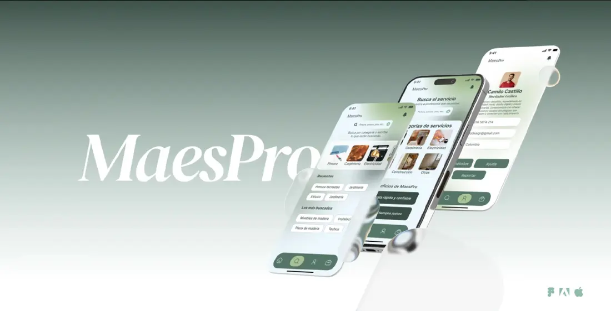
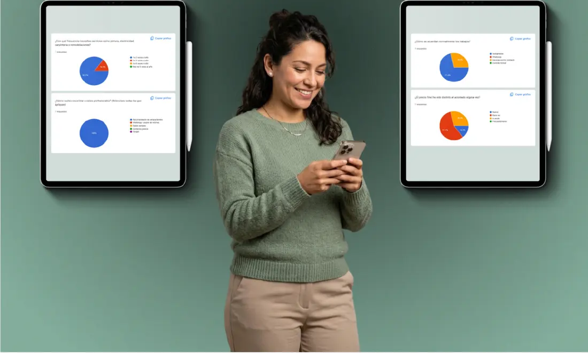
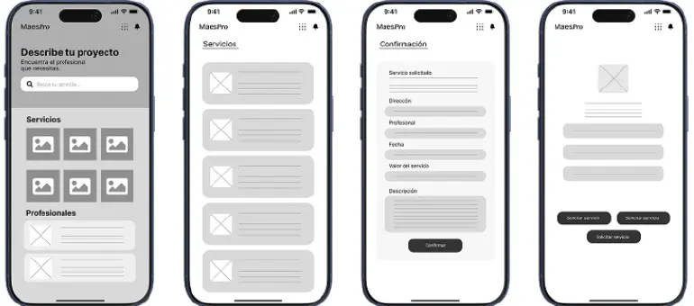
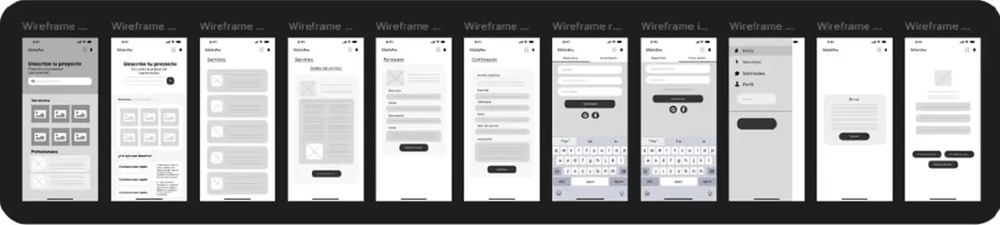
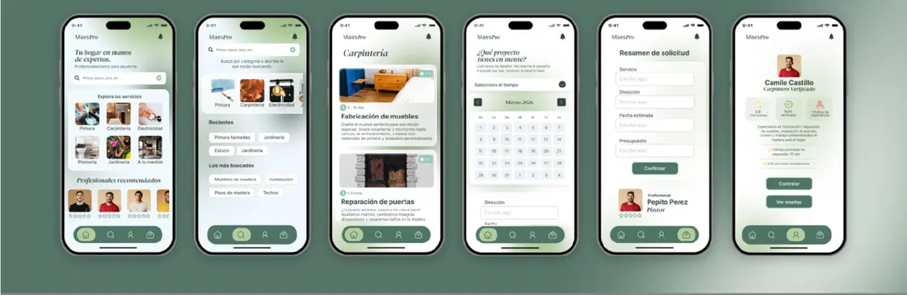
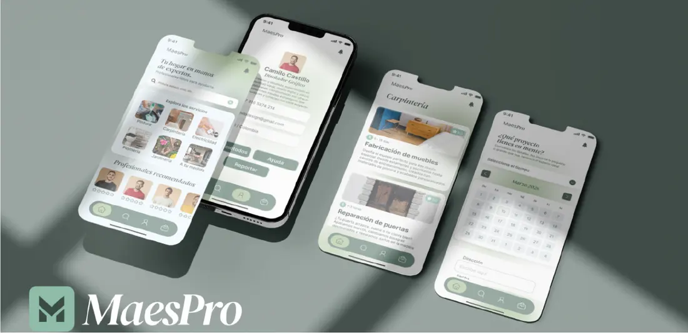

MaesPro
Concepto de app para encontrar, evaluar y contratar servicios del hogar con confianza.

Pedir un arreglo en casa es incierto.
Al analizar el recorrido del usuario encontré cuatro fricciones:
- Encontrar profesionales confiables exige un esfuerzo agotador.
- La calidad del servicio depende de la suerte.
- Los presupuestos varían y dificultan decidir.
- Dejar entrar a desconocidos a casa genera sensación de vulnerabilidad.
Una experiencia rápida, transparente y segura.
Diseñar una experiencia digital intuitiva para encontrar, evaluar y contratar servicios del hogar. La apoyé en tres bases: confianza (perfiles verificados y datos reales), transparencia (claridad en cada condición) y simplicidad (los pasos mínimos para completar una solicitud).
Entender antes de diseñar.
Entrevisté a 2 personas de mi entorno y lancé una encuesta en Google Forms sobre cómo buscan ayuda para el hogar. Es una validación inicial: la muestra es pequeña y no pretende ser representativa.

Número de personas que respondieron la encuesta. Sin ese dato, los porcentajes pueden malinterpretarse.
Insight principal: el precio pasa a un segundo plano. Lo que la gente busca es la tranquilidad de poner su hogar en manos de alguien confiable.
A partir de lo aprendido definí dos perfiles de usuario: Laura Martínez (34 años, administradora de empresas), que quiere comparar opciones y sentirse segura; y Carlos Ruiz (46 años, gerente de proyectos), que tiene poco tiempo y prefiere delegar en profesionales verificados.
Descubrir, evaluar, solicitar.
MaesPro reúne la búsqueda y la contratación en un solo lugar: explorar categorías, revisar el perfil, la experiencia y las valoraciones del profesional, y enviar una solicitud clara.
Organicé primero la estructura de navegación para mantener el recorrido lo más corto posible y dejar claro qué puede hacer el usuario en cada momento.
Del papel al prototipo.
- Bocetos en papel para probar formas de organizar la información.
- Wireframes de media fidelidad en Figma, enfocados en estructura y navegación, sin color.
- Varios caminos para inicio, servicios, login y notificaciones.
- Sistema visual: DM Serif Display para títulos, Inter para textos y una paleta verde que transmite confianza y cercanía.
- Alta fidelidad y prototipo interactivo en Figma para comprobar cómo se siente la navegación.




Enlace al prototipo en Figma y una o dos capturas de pantallas clave.
Lo que este caso no es.
No hubo pruebas de usabilidad con el prototipo, no hay desarrollo y la investigación fue exploratoria. El siguiente paso lógico sería probar el flujo principal con usuarios reales y ajustar según lo que se observe.
Mi primer proyecto desde cero.
Nació de una necesidad personal. Me enseñó la importancia de investigar antes de diseñar y de decidir pensando en las necesidades reales de los usuarios, y reforzó mi manejo de arquitectura de información, interfaces, prototipado y construcción de experiencias digitales.
Ver en Behance